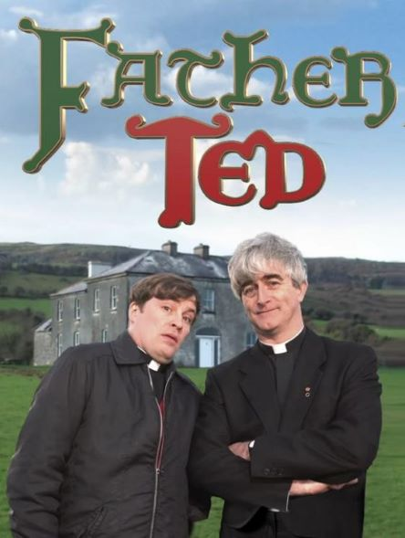

Father Ted

- Years On Air: 1995 - 1998
- Starring:
Dermot Morgan, Ardal O'Hanlon, Frank Kelly
Three misfit priests and their housekeeper live on Craggy Island,
not the peaceful and quiet part of Ireland that it seems to be.
Click here to go to the official
IMDb Page